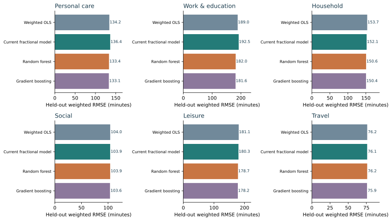
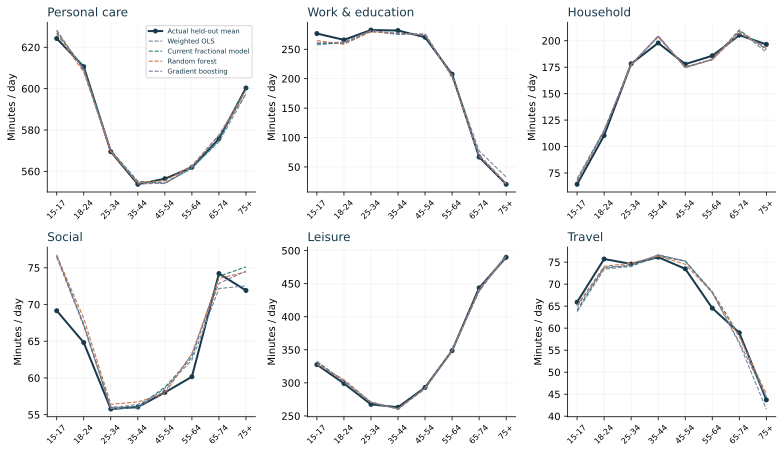

OLS and the current model
Weighted OLS gives a linear baseline; the fractional model models seven shares jointly and enforces the day budget naturally. Neither requires a neural network.
A2 / APPENDIX · PREDICTIVE VALIDATION
Four methods predict the same unseen ATUS diaries. Accuracy against real minutes comes first; agreement between algorithms is a separate check.
THE RESULT
The website keeps the interpretable fractional model. The comparison measures the size of its accuracy gap; it does not establish statistical equivalence or validate causal moving effects.
A FAIR COMPARISON
Year-stratified splits use a fixed seed. Models are selected using training/tuning data, then refitted on the combined 80% development sample. Each predicts age, demographic, year, metro and actual diary-calendar inputs. All final days are nonnegative and sum to 1,440 minutes.
| Method | MAE · minutes | RMSE · minutes | R² |
|---|---|---|---|
| Weighted OLS | 101.32 | 145.35 | 0.295 |
| Current fractional model | 101.57 | 146.01 | 0.289 |
| Random forest | 98.41 | 142.69 | 0.321 |
| Gradient boosting | 98.34 | 142.34 | 0.324 |
Survey-weighted, six-activity scores. Lower MAE/RMSE is better. R² uses held-out weighted variance. Unclassified time is fitted and reported separately in the full CSV.
ERROR DISTRIBUTIONS
Each diary’s error is its mean absolute error across the six activities. Curves show the weighted share of held-out diaries below each error threshold; a curve farther left/up indicates lower errors.
BY ACTIVITY

These are errors for individual single-day diaries. A higher error in one activity is not itself evidence of an inaccurate group mean.
GROUP CALIBRATION
Actual means and average predictions use the same held-out people and their actual diary calendars. This tests group calibration; it is different from the standardized age comparisons in the activity tools.

Downloads retain every reported group’s sample size, actual mean, predicted mean and signed bias. Metro calibration is limited to held-out groups with at least 100 diaries; this coverage condition does not remove small codes from the fitted activity model.
Group calibration CSV ↓ · Differences between model profiles ↓Weighted OLS gives a linear baseline; the fractional model models seven shares jointly and enforces the day budget naturally. Neither requires a neural network.
Random forest averages decision trees. Gradient boosting combines sequentially fitted trees; this release uses CatBoost with explicit one-hot encoding of the categorical inputs.
Each respondent contributes one diary, not a repeatedly observed sequence. Recurrent networks are not the first benchmark for these tabular inputs.
One split and a small tuning grid do not establish a universal best method. No equivalence margin was set. Diary bootstraps do not reproduce the complex survey design.
The current model is refitted from the training/development rows; its full-data website fit is not reused for test scoring. Test outcomes are excluded from preprocessing and model selection within this run. The outer split repeats the earlier v3 internal holdout for comparability; it is not external validation. OLS and tree outputs are projected onto the same nonnegative 1,440-minute simplex before headline scoring. The final boosting fit uses one-hot encoding (maximum 512 levels); a slower native target-statistic attempt was stopped before test scoring and its protocol revision is retained.
Good performance in the newer activity model does not resolve the low split-half reliability of the original OD area scores. No individual moving effect is validated here.